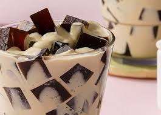

Home
Coffee Jelly

So What is CoffeeJelly?
Coffee jelly is a popular chilled dessert made from sweetened, strongly brewed coffee set with gelatin or agar-agar.
Often served in cubes, it offers a wobbly, refreshing texture, frequently topped with cream, condensed milk, or vanilla ice cream.
Originating in Britain, it became a staple in Japanese café culture.
Ingredients
- 2 tablespoons hot water
- 1 (.25 ounce) package unflavored gelatin
- 2 cups fresh brewed coffee
- 3 tablespoons white sugar
Steps To Make It
- Gather all ingredients.
- Stir gelatin and hot water together in a small bowl until gelatin dissolves; pour into a saucepan.
Stir in coffee and sugar; bring to a boil over high heat.
- Pour coffee mixture into a shallow, 9-inch square baking dish.
Chill in the refrigerator until solidified, 6 to 7 hours.
- Gather all ingredients.
- Cut coffee jelly into cubes to serve.
- Enjoy